Três Armadilhas Para Ter Cautela!
Olá querido aluno! Antes de mergulhar em nossa aula e nos simuladores, atente-se a três conceitos que costumam gerar confusão quando exploramos este tema:
Quando discutimos evolução, é comum construir uma associação com a "vontade de evoluir". Precisamos lembrar que o ser vivo não muda "PARA" se adaptar. O organismo não tem vontade própria de evoluir! Como vamos discutir nesta aula, o ambiente atua como um filtro, ou uma peneira seletiva sobre variações genéticas que já existiam previamente de forma aleatória na população. Então, não há um "objetivo final" na evolução: ela é um processo contínuo e não direcionado.
Outro erro epistemológico é o de atribuir à "evolução" um sentido de progresso linear. O processo evolutivo não é uma subida linear que rumo ao progresso que eventualmente chegaria em nós (humanos). Na realidade, este é um processo que apenas descreve mudanças em populações ao longo do tempo. De forma alguma há o conceito de "avanço" em qualquer sentido. O processo evolutivo da Vida em nosso planeta é uma árvore densamente ramificada, que deu origem a todas as formas de vida aqui existentes, desde as mais simples até as mais complexas. Bactérias e amebas não são "menos evoluídas" que mamíferos; estão perfeitamente adaptadas aos seus nichos.
Quando discutimos a origem da vida, estamos apenas abordando teorias que poderiam ter dado origem às primeiras formas auto-replicantes. Como vamos ver em breve, o experimento de Pasteur provou que a vida hoje só vem de outra vida. Isso não contradiz Oparin-Haldane: as condições da Terra primitiva (sem oxigênio livre, com descargas elétricas e radiação ultravioleta intensa) permitiram a formação de moléculas orgânicas antes do surgimento das primeiras células.
A Origem da Vida: Da Disputa Histórica à Síntese Prebiótica
Como a vida surgiu? Por mais de dois milênios, a humanidade acreditou na Teoria da Abiogênese, também chamada de Teoria da Geração Espontânea. A lógica parecia óbvia aos olhos nus da época: se um pedaço de carne ficasse exposto, dias depois estaria repleto de larvas; quando as cheias do Rio Nilo recuavam, o lodo fértil parecia "brotar" rãs, crocodilos e serpentes. Assim, era natural concluir que a vida surgia espontaneamente da matéria bruta, assim, o nome da teoria, abiogênese.
Foi preciso construir a passos firmes o método científico moderno — com isolamento de variáveis, grupos de controle e instrumentos de precisão — para provar o princípio soberano da Biogênese: todo ser vivo provém exclusivamente de outro ser vivo pré-existente (máxima latina: Omnis cellula e cellula).
A (sem) + Bio (vida) + Gênese (origem). Crença de que matéria bruta continha um "princípio ativo" ou força vital.
Seres vivos originam-se exclusivamente pela reprodução de outros seres vivos preexistentes da mesma espécie.
Os Investigadores da Geração Espontânea: Quem Foram os Cientistas?
Selecione um cientista para examinar sua hipótese, o desenho do experimento e seu impacto histórico:
Aristóteles e a Doutrina do Princípio Ativo

Aristóteles defendia que a matéria inanimada possuía um princípio ativo ou força vital (enteléquia). Se as condições físicas fossem propícias (calor, umidade, escuridão), essa força organizaria a matéria inerte em um organismo vivo. Essa teoria perdurou por mais de dois mil anos por falta de método experimental controlado.
Jan Baptist van Helmont e a Famosa "Receita de Ratos"
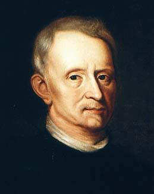
Médico e alquimista renomado, Van Helmont publicou uma "receita científica" que prometia gerar camundongos: colocava-se uma camisa suja com suor humano junto a grãos de trigo em um jarro aberto guardado em uma caixa escura. Segundo ele, após 21 dias, "o fermento do suor humano transformava o trigo em ratos adultos".
Francesco Redi e o Nascimento do Método Experimental
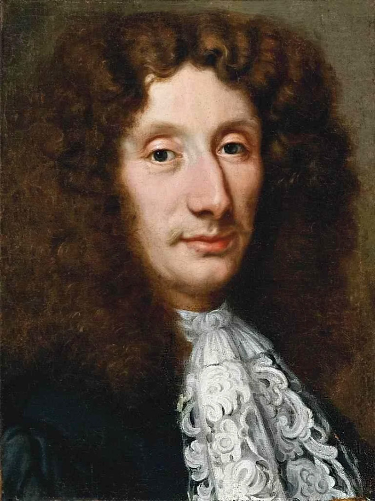
Incomodado com a ideia de que a carne gerava larvas por geração espontânea, o médico Francesco Redi montou um dos primeiros experimentos biológicos controlados da história com três grupos de frascos contendo carne:
Conclusão de Redi: As larvas não surgiam da carne; elas eram a fase juvenil das moscas, nascidas de ovos microscópicos.
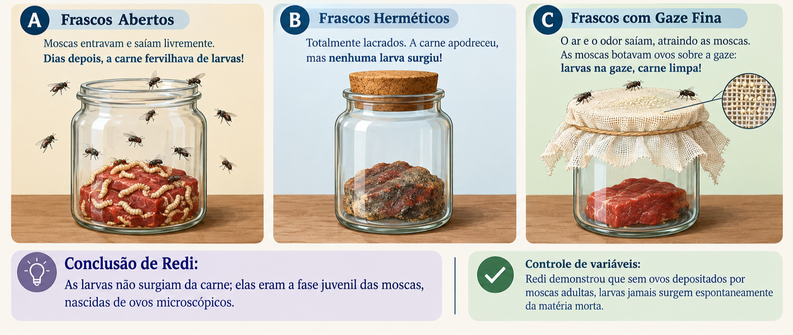
A Batalha dos Caldos Nutritivos: John Needham vs. Lazzaro Spallanzani
Com a invenção do microscópio, os defensores da geração espontânea contra-atacaram: "Animais grandes podem vir de ovos, mas micróbios nascem do caldo nutritivo sim!".
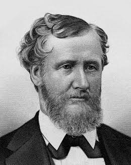
John Needham (Inglaterra, 1745): Ferveu caldo de carne por poucos minutos em frascos tapados com rolhas de cortiça porosa. Dias depois, o caldo turvou com microrganismos. Needham alegou ter provado a "força vital".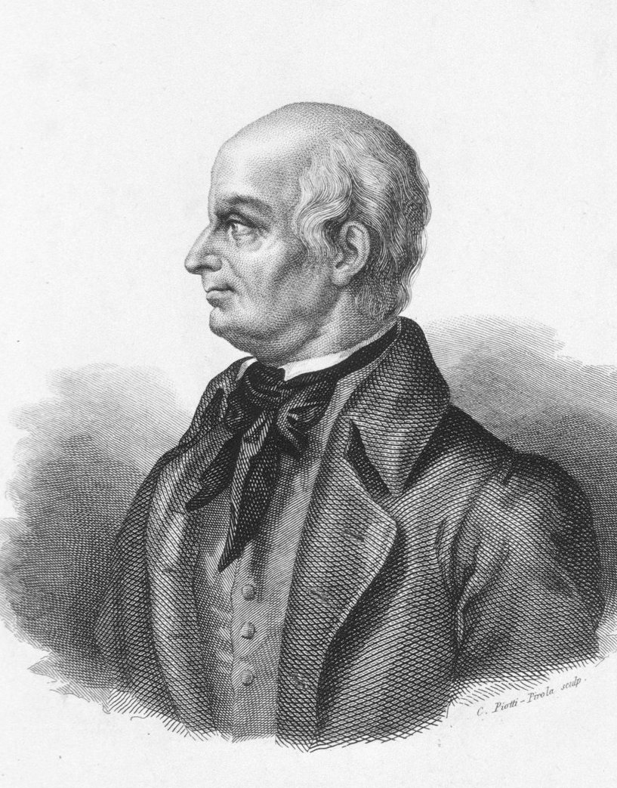
Lazzaro Spallanzani (Itália, 1768): Apontou falhas em Needham: repetiu o teste, mas ferveu os caldos por quase uma hora e derreteu o gargalo de vidro para vedá-los hermeticamente. Resultado: o caldo permaneceu perfeitamente estéril e límpido!Needham retrucou que a fervura prolongada havia "destruído a força vital e estragado o ar". O impasse durou quase um século.
Louis Pasteur e o Frasco Pescoço de Cisne
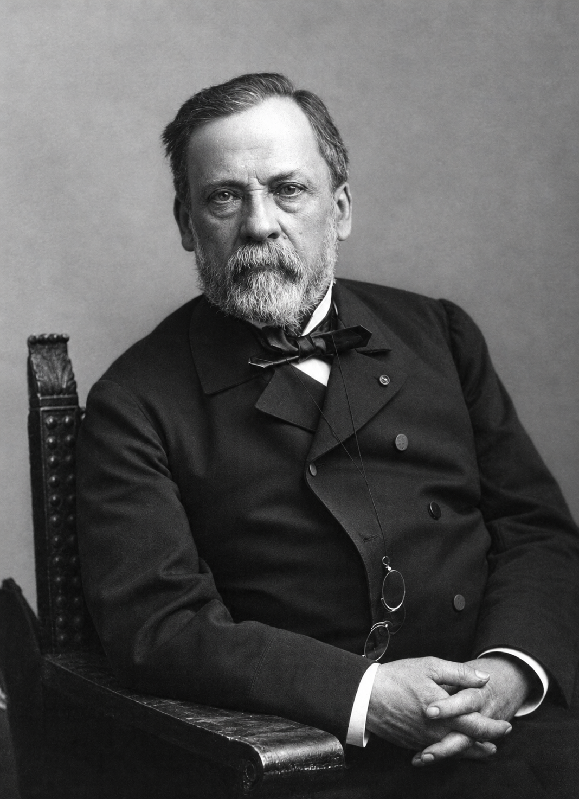
Pasteur encerrou a disputa com um desenho experimental genial promovido pela Academia Francesa de Ciências:
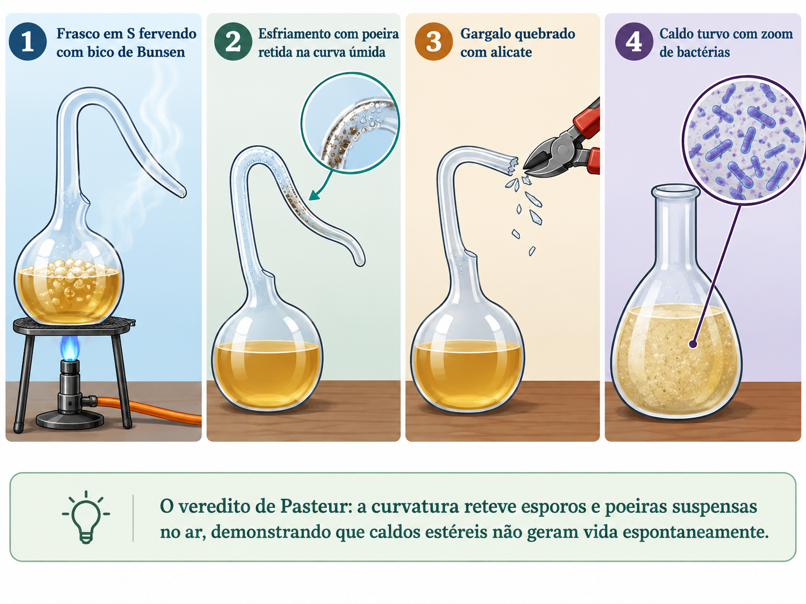
O Paradoxo da Biogênese e a Solução de Oparin-Haldane
Se todo ser vivo só nasce de outro, como surgiu o primeiríssimo habitante da Terra? Nas décadas de 1920 e 1930, Aleksandr Oparin (Rússia) e John Burdon Haldane (Reino Unido) propuseram de forma independente a Hipótese da Evolução Gradual dos Compostos Químicos (Evolução Prebiótica). Eles deduziram que o surgimento da vida a partir da matéria inanimada ocorreu apenas uma vez, sob as condições extremas da Terra primitiva — condições que não existem mais hoje!
- Sem camada de ozônio ($O_3$): Bombardeamento contínuo de radiação ultravioleta letal direto na crosta.
- Crosta terrestre instável: Vulcanismo generalizado expelindo magma, cinzas e vapores incandescentes.
- Atmosfera Redutora: Composta primordialmente por Metano ($\mathrm{CH_4}$), Amônia ($\mathrm{NH_3}$), Gás Hidrogênio ($\mathrm{H_2}$) e Vapor de Água ($\mathrm{H_2O}$).
- ⚠️ ATENÇÃO CRÍTICA: NÃO HAVIA OXIGÊNIO LIVRE ($\mathrm{O_2}$)! Se houvesse $\mathrm{O_2}$ livre, ele oxidaria e quebraria rapidamente as primeiras moléculas orgânicas antes que elas pudessem se associar.
A Cozinha Prebiótica: Como se Formaram os Blocos da Vida?
Os coacervados não eram seres vivos ainda, mas protocélulas capazes de manter um meio interno químico distinto do exterior. Quando essas estruturas englobaram uma molécula autorreplicante (como o RNA primordial), surgiram as primeiras células vivas!
O Teste de Laboratório: O Experimento de Miller e Urey (1953)
Na Universidade de Chicago, Stanley Miller e seu orientador Harold Urey construíram um aparato de vidro fechado que simulava fielmente a atmosfera e os mares da Terra primitiva:
Após apenas uma semana de funcionamento ininterrupto, o líquido límpido do fundo adquiriu uma coloração marrom-avermelhada. Ao analisá-lo quimicamente, Miller encontrou diversos aminoácidos orgânicos! Estava provado: a química da Terra primitiva era capaz de gerar espontaneamente os blocos moleculares da vida.
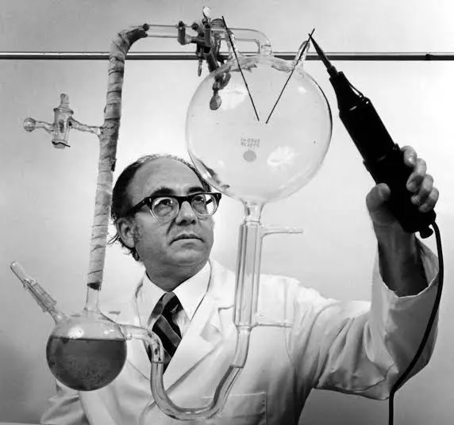
A Hipótese Heterotrófica & O Grande Evento de Oxigenação
Hipótese Heterotrófica: Os primeiros organismos eram simples procariontes sem maquinário fotossintético. Eles absorviam moléculas orgânicas prontas no oceano primitivo e extraíam energia por fermentação anaeróbia (sem $\mathrm{O_2}$).
Ancestrais das cianobactérias aprenderam a fazer fotossíntese liberando gás oxigênio ($\mathrm{O_2}$). Esse evento:
- Extinguiu incontáveis espécies anaeróbias que não toleravam oxigênio ("Catástrofe do Oxigênio").
- Oxidou o ferro oceânico, gerando as gigantescas jazidas de ferro exploradas pela mineração hoje.
- Formou a camada de ozônio ($\mathrm{O_3}$), blindando a Terra contra raios UV e abrindo caminho para a terra firme.
- Possibilitou a evolução da respiração celular aeróbia, até 18 vezes mais eficiente que a fermentação!
A Teoria da Endossimbiose (Lynn Margulis)
Origem dos EucariontesComo surgiram as células complexas (eucariontes)? Pela fusão cooperativa entre bactérias de vida livre:
- Mitocôndrias: Uma célula hospedeira fagocitou uma bactéria aeróbia que escapou da digestão. A bactéria fornecia energia (ATP) e a hospedeira garantia alimento e abrigo.
- Cloroplastos: Uma linhagem com mitocôndrias fagocitou cianobactérias fotossintetizantes, originando plantas e algas.
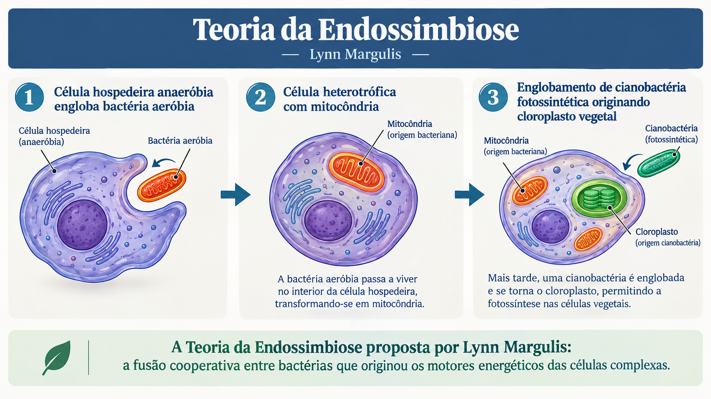
Lynn Margulis: uma ideia que mudou a biologia
Lynn Margulis foi uma bióloga norte-americana que transformou a compreensão sobre a origem das células eucarióticas. Sua teoria mostrou que a cooperação entre organismos, e não apenas a competição, também pode produzir grandes inovações evolutivas.
Sua trajetória lembra que a ciência avança quando diferentes perguntas, experiências e vozes encontram espaço para transformar evidências em conhecimento.
O que é Evolução? O Arquivo da Vida e os Três Domínios
🧬 Evolução Biológica: Descendência com Modificação
No cotidiano, a palavra "evolução" costuma ser usada como sinônimo de "melhoria", "avanço tecnológico" ou "superioridade". Em Biologia, essa ideia está totalmente errada. Evolução biológica significa mudança nas frequências gênicas e nas características de uma população ao longo do tempo geológico.
Uma samambaia, uma ameba ou uma bactéria não são organismos "atrasados". Elas são sobreviventes espetaculares, cujas linhagens superaram todas as extinções em massa da Terra. Não existem seres vivos "mais evoluídos" ou "menos evoluídos": todos os organismos vivos hoje tiveram o mesmo tempo de evolução desde o ancestral comum (cerca de 3,8 bilhões de anos) e estão adaptados aos seus modos de vida.
1. Paleontologia & Registro Fóssil
Fósseis são restos (ossos, dentes, carapaças) ou vestígios de atividade biológica (pegadas, marcas de folhas, fezes fossilizadas chamadas coprólitos) preservados por mais de 10.000 anos em rochas sedimentares, âmbar ou gelo.
2. Conexão com Geografia: Fósseis e Deriva Continental
Alfred Wegener (1912) propôs que todos os continentes formavam uma única massa: a Pangeia. A prova biológica irrefutável veio da paleontologia:
- O pequeno réptil de água doce Mesosaurus ocorre fossilizado exclusivamente no sudeste do Brasil e no sul da África.
- A samambaia fóssil Glossopteris é encontrada na América do Sul, África, Índia, Antártica e Austrália.
Eles não cruzaram os 5.000 km do Atlântico nadando! Quando viveram, América do Sul e África formavam o bloco contínuo de Gondwana.
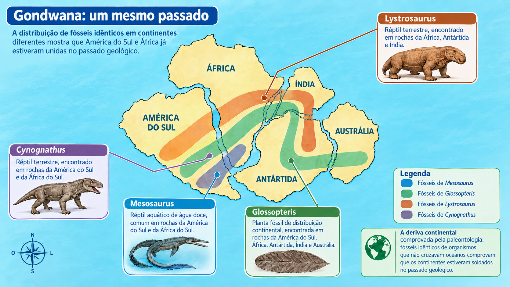
3. Anatomia Comparada
Homologia (Divergência Evolutiva): Mesma origem embrionária e arquitetura óssea fundamental, mesmo com funções diferentes (braço humano, pata do cavalo, nadadeira da baleia e asa do morcego).
Analogia (Convergência Evolutiva): Mesma função ecológica, mas origens embrionárias distintas (asa de ave com ossos vs. asa de borboleta de quitina).
4. Órgãos Vestigiais
Estruturas atrofiadas que perderam sua função original em uma espécie, mas permanecem funcionais em espécies aparentadas.
- Apêndice vermiforme: Nos herbívoros abriga bactérias para digerir celulose; no humano é vestigial.
- Cóccix humano: Vestígio esquelético da cauda dos primatas ancestrais.
5. Evidências Moleculares
Todo e qualquer ser vivo na Terra — de um vírus até uma baleia — compartilha o mesmo código genético universal formado pelas bases A, T, C, G para produzir os mesmos 20 aminoácidos.
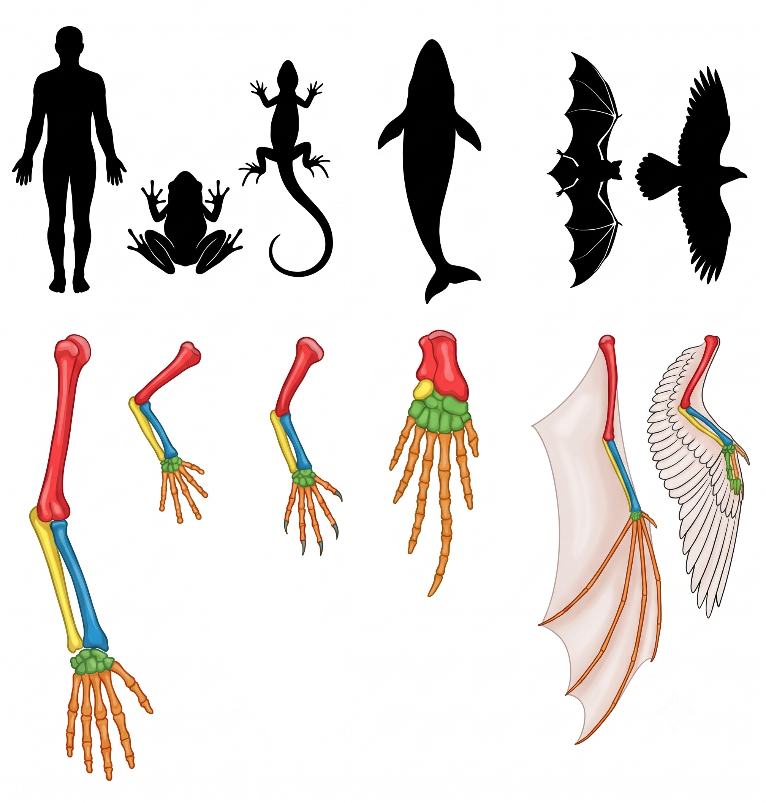
Analisando o RNA ribossômico, Carl Woese revolucionou a sistemática biológica ao demonstrar que toda a vida na Terra brota de um único Ancestral Comum Universal (LUCA — Last Universal Common Ancestor) e se ramifica em Três Grandes Domínios:
Procariontes verdadeiros (sem núcleo delimitado por membrana). Apresentam parede celular de peptideoglicano. São essenciais para os ciclos biogeoquímicos, decomposição e saúde humana (microbiota intestinal).
Procariontes unicelulares com lipídios de ligações éter (super-resistentes). Sua maquinaria de leitura do DNA se assemelha muito mais aos eucariontes! Vivem em ambientes extremos (fontes termais a 100°C, lagos hipersalinos e no estômago de ruminantes).
Células complexas com núcleo delimitado por membrana (carioteca) e organelas membranosas (mitocôndrias e cloroplastos). Abrange 4 reinos conhecidos: Protistas, Fungos, Plantas e Animais.
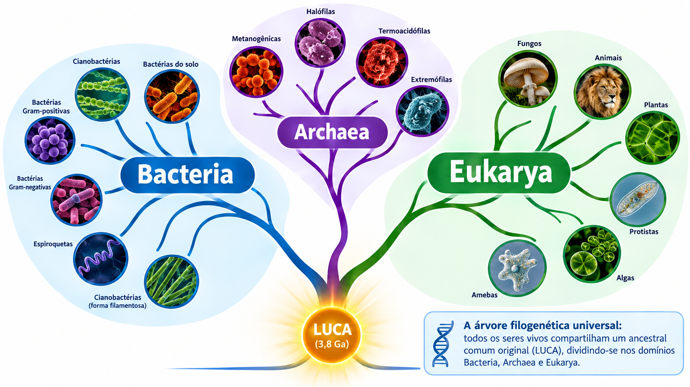
As Grandes Teorias Evolutivas: Do Fixismo à Seleção Natural
1. O Fixismo e a Hipótese das Espécies Imutáveis
Durante séculos, vigorou no pensamento ocidental a crença de que as espécies biológicas eram imutáveis e eternas: cada espécie teria sido criada de forma independente e mantido sua forma inalterada desde a criação original.
A descoberta nas camadas de rochas de fósseis gigantescos e extintos que não existiam mais no planeta (como mamutes, preguiças-gigantes e dinossauros) desmentiu a ideia de que a fauna sempre fora idêntica. O anatomista Georges Cuvier tentou salvar o fixismo com a teoria do Catastrofismo (dilúvios periódicos dizimavam faunas antigas que eram substituídas por novas criações), mas as evidências de transição gradual anatômica acabaram por sepultar o modelo fixista.
Jean-Baptiste de Lamarck (1809)
O Pioneiro do TransformismoNo ano em que Charles Darwin nasceu (1809), o naturalista francês Lamarck teve a imensa coragem científica de publicar a primeira teoria consistente de evolução biológica: os seres vivos se transformam ao longo do tempo!
"Diante de árvores altas, girafas ancestrais esticavam continuamente o pescoço e pernas para alcançar as copas. Com esse estiramento contínuo em vida, o pescoço cresceu alguns centímetros. Seus filhotes já nasceram com o pescoço mais longo e continuaram esticando, gerando pescoços sucessivamente mais compridos."
Porque características somáticas adquiridas em vida (músculos, pele, cicatrizes) NÃO afetam o DNA das células reprodutivas (óvulos e espermatozoides). Fazer musculação não faz seu filho nascer musculoso! Em 1889, August Weismann cortou a cauda de camundongos por 20 gerações; todos os filhotes continuaram nascendo com caudas normais.
⭐ O Mérito Imortal de Lamarck: Foi o primeiro a proclamar que a vida se transforma e que o meio ambiente desempenha um papel determinante na evolução!
Charles Darwin & Alfred Wallace (1859)
A Seleção NaturalDarwin (em sua viagem de 5 anos no HMS Beagle pelo Brasil e Galápagos) e Wallace (em pesquisas na Amazônia e no Arquipélago Malaio) perceberam a mesma verdade fundamental: a natureza produz mais descendentes do que os recursos podem sustentar.
"Na população ancestral já existiam girafas de pescoço longo, médio e curto (variação pré-existente). Quando a seca eliminou a vegetação rasteira, as de pescoço mais longo alcançaram as copas, alimentaram-se melhor, sobreviveram e geraram mais filhotes. As de pescoço curto morreram de fome. Ao longo de milênios, os genes para pescoço longo predominaram."
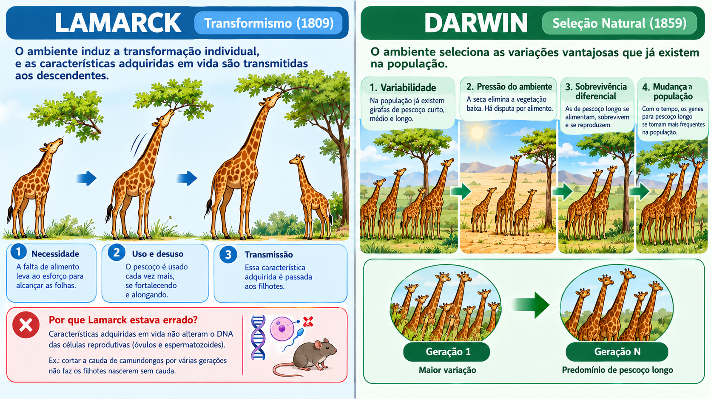
Painel Comparativo em Duas Colunas:
Coluna Esquerda (Lamarck: esforço individual em vida induz o estiramento transmitido aos filhos) vs. Coluna Direita (Darwin: variabilidade prévia filtrada pela seleção natural).
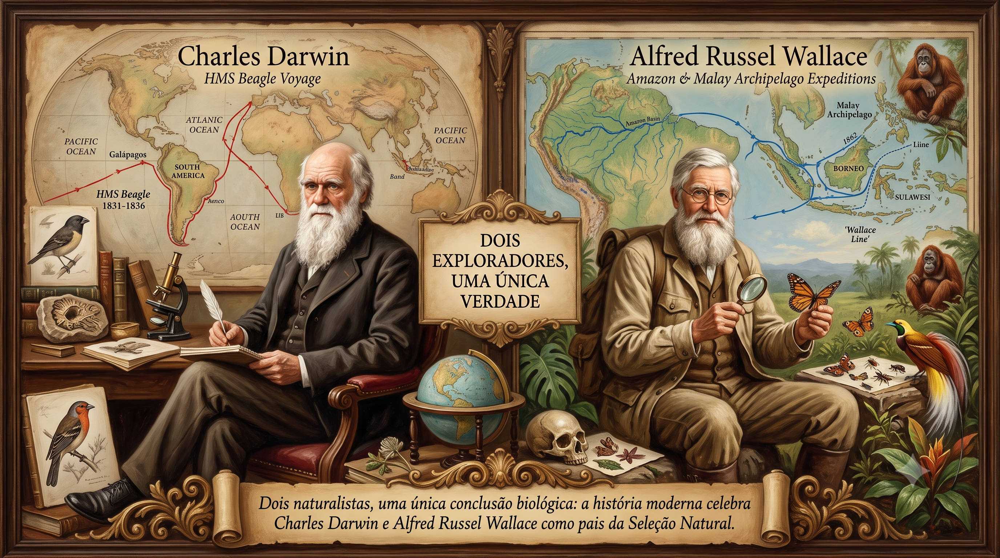
Dois Exploradores, Uma Única Verdade:
Retrato clássico de Darwin (rota do HMS Beagle) e Wallace (pesquisas na Amazônia e Arquipélago Malaio) com rotas de navegação no fundo.
🧬 O que Darwin Não Sabia: O Neodarwinismo (Teoria Sintética da Evolução)
Darwin provou que a seleção natural escolhe os mais aptos, mas não conseguia explicar duas questões cruciais: (1) Como as variações surgem na população? (2) Como elas são transmitidas aos filhotes?
Adaptação é qualquer característica herdável em uma população que aumente sua aptidão biológica (fitness), isto é, sua probabilidade de sobreviver e gerar descendentes férteis. As adaptações agrupam-se em três grandes pilares:
• Camuflagem: A forma e cor se confundem com o ambiente (o bicho-pau que parece graveto seco, a coruja no tronco, o camaleão folha-seca).
• Mimetismo Batesiano: Uma espécie inofensiva imita uma venenosa! A cobra-coral-falsa copia os anéis vermelhos, pretos e brancos da coral-verdadeira venenosa para espantar predadores.
• Aposematismo: Cores berrantes de alerta! Sapos dendrobatídeos da Amazônia com cores elétricas avisando: "sou letal!".
• Peçonhas e Toxinas: Serpentes como jararaca e cascavel sintetizam enzimas que paralisam e digerem a presa de dentro para fora.
• Retenção Extrema de Água: Roedores do semiárido e répteis da Caatinga brasileira possuem alças de Henle ultra-longas nos rins, produzindo urina quase sólida.
• Plantas Xerófitas (Cactos): Metabolismo ácido (CAM): abrem estômatos apenas à noite para captar $\mathrm{CO_2}$ sem perder água no calor do sol.
• Migração em Massa: Aves que voam milhares de quilômetros fugindo do inverno polar antes que a neve soterre as sementes.
• Danças de Corte: Machos de aves-do-paraíso realizam coreografias complexas e exibem plumagens exuberantes para seleção sexual pelas fêmeas.
• Caça Cooperativa em Bando: Matilhas de lobos e cardumes de orcas sincronizam cercos para capturar presas gigantes.
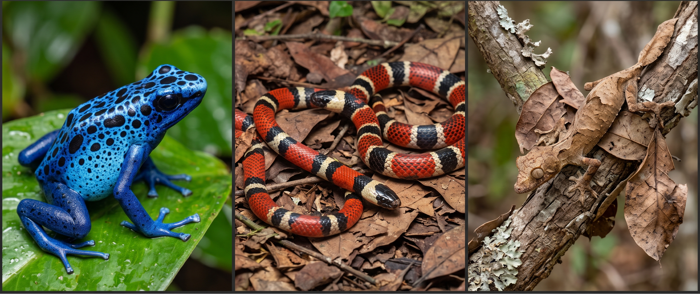
Rã-Ponta-de-Flecha Azul (Dendrobates tinctorius azureus): A cor azul-elétrico com manchas pretas adverte ostensivamente os predadores sobre os alcaloides altamente tóxicos presentes na sua pele.
Cobra-Coral e Falsa-Coral: A falsa-coral (inofensiva) evoluiu o mesmo padrão vibrante de anéis tricolores da coral-verdadeira (altamente peçonhenta), enganando os predadores que evitam ambas.
Lagartixa-Satânica-Cauda-de-Folha (Uroplatus phantasticus): Seu corpo imita com precisão a textura, tom marrom e nervuras de uma folha seca murcha em um galho, fundindo-se à floresta.
Síntese Didática: "Na luta pela vida, a rã azul adverte com cores chocantes (aposematismo), a falsa-coral se protege imitando a serpente peçonhenta (mimetismo) e a lagartixa cauda-de-folha desaparece na paisagem (camuflagem)."
Laboratórios Virtuais: Modelagem de Sistemas Evolutivos
Alterne entre o modelo Darwiniano (seleção natural e custo calórico) e o modelo Lamarckiano (uso, desuso e herança somática).
Cada criatura é um organismo heterotrófico com custo metabólico contínuo. Elas precisam coletar comida verde para sobreviver ao ciclo do "Dia". Criaturas mais rápidas (avermelhadas/roxas) cobrem maiores distâncias e alcançam o alimento antes dos competidores, mas pagam um preço calórico quadrático ($v^2$). Se acumularem energia e digerirem pelo menos 2 alimentos, reproduzem-se assexuadamente com mutações genéticas na velocidade!
Modelagem
Quantitativa
As Equações Que Regem a Sobrevivência, o Gasto e a Evolução
Balanço Energético Estrito
Ver detalhes ▼
As Equações Que Regem a Sobrevivência, o Gasto e a Evolução
Significado prático dos termos:
- $0.18$ un/frame: Taxa metabólica basal. Mesmo se a criatura ficar completamente estática, gasta energia apenas para manter suas membranas e processos celulares vivos.
- $0.035 \cdot v^2$: Custo hidrodinâmico cinético. O expoente quadrático ($v^2$) é a chave da seleção natural: dobrar a velocidade quadruplica o gasto de movimento!
Como o organismo metaboliza cada semente:
- Choque de Emergência ($+45$ un): Injetado no momento do toque físico. Evita morte súbita enquanto persegue uma presa à beira do esgotamento.
- Blobs Dorsais (Máx 4): O alimento vira uma esfera verde nas costas do organismo. A cada 30 frames, 1 blob é digerido rendendo $+140$ un de energia (se $E < 440$).
- Catabolismo de Socorro: Se a energia cair abaixo de $120$ un, a digestão é imediata sem esperar timer.
A regra do final do ciclo solar:
O relógio circular (canto superior direito do simulador) consome uma fatia a cada frame. Se a criatura não mantiver saldo positivo contínuo, sua energia atinge $0$ e ocorre a morte imediata por inanição com dissipação celular e som característico.
Gatilhos reprodutivos e investimento parental:
- Condição: Energia $E > 460$, pelo menos 2 comidas digeridas na vida e população total $< 65$.
- Investimento: O progenitor doa $200$ un de sua energia para criar o filho (que nasce com $240$ un).
- Variabilidade: O parâmetro $\mu$ (slider de mutação) define o desvio percentual máximo ($\pm \mu\%$).
| Fenótipo / Linhagem | Velocidade ($v$) | Cor Visual | Gasto / Frame | Custo do Dia (500 frames) | Comidas p/ Sobreviver | Resistência à Fome |
|---|---|---|---|---|---|---|
| Lento (Econômico) | $1.0 \text{ px/f}$ | Azul suave | $0.215 \text{ un}$ | $\approx 107 \text{ un}$ | 1 alimento (sobra energia!) | Alta (~28s sem comer) |
| Médio (Equilibrado) | $3.0 \text{ px/f}$ | Roxo vibrante | $0.495 \text{ un}$ | $\approx 247 \text{ un}$ | 2 alimentos / dia | Média (~12s sem comer) |
| Hiperveloz (Voraz) | $5.0 \text{ px/f}$ | Vermelho vivo | $1.055 \text{ un}$ | $\approx 527 \text{ un}$ | 3 a 4 alimentos / dia! | Crítica (~5.6s sem comer) |
📊 Histograma: Distribuição de Velocidade
Tempo RealFrequência de indivíduos por faixa de velocidade. A seleção natural desloca a curva conforme os recursos mudam.
⚖️ Dinâmica de Recursos vs. População
Equilíbrio AtivoMonitoramento da capacidade de suporte biológica do habitat em tempo real.
Bancada de Desafios Didáticos: Teste suas Hipóteses Evolutivas
O que ocorre quando aumentamos a disponibilidade de alimento ao limite máximo?
Hipótese investigativa: Sem a barreira da fome, o custo de combustível $0.035 \cdot v^2$ deixa de ser uma punição seletiva. Quem vencerá a corrida pelas sementes?
🎯 Consequência observável: As criaturas avermelhadas e velozes monopólizam os recursos, reproduzem-se em cascata e o histograma corre inteiro para a direita ($v > 4.5$).
O que ocorre quando diminuímos drasticamente o alimento para apenas 8 sementes?
Hipótese investigativa: Quem sucumbe primeiro? As rápidas que gastam 5x mais calorias ou as lentas?
🎯 Consequência observável: As criaturas vermelhas entram em inanição e morrem com som melancólico em segundos. Apenas indivíduos azuis (lentos, econômicos) conseguem sobreviver com o pouco que há!
O que ocorre quando reduzimos a taxa de mutação ao mínimo (5%)?
Hipótese investigativa: Os descendentes herdam quase exatamente a mesma velocidade dos progenitores ($\pm 5\%$). O que acontece com a diversidade?
🎯 Consequência observável: O histograma fenotípico afunila em uma única torre vertical estreita. A população perde variabilidade e fica vulnerável a crises.
O que ocorre quando elevamos a taxa de mutação para o limite de 60%?
Hipótese investigativa: Cada nascimento é uma loteria: pais lentos geram aberrações rápidas e vice-versa.
🎯 Consequência observável: O histograma fica plano e espalhado por todas as 5 faixas. Há alto desperdício de indivíduos inviáveis, mas plasticidade exploratória máxima.
E se você maximizar o alimento (250) e a mutação (60%), esperar o ecossistema se estabilizar... e de repente cortar a mutação para 5% e zerar o alimento para 2?
A Lição da Paleontologia e Extinção em Massa:
Na Etapa 1, a superabundância seleciona indivíduos hipervelozes viciados em altíssimo consumo energético ($v^2$). A população estabiliza-se como "predadores vorazes".
Na Etapa 2 (O Choque), a comida evapora e a mutação congela. As criaturas vermelhas necessitam de $>500 \text{ un/dia}$ e morrem em segundos! Como a mutação foi cortada para 5%, elas não conseguem des-evoluir geneticamente a tempo de gerar descendentes lentos e econômicos! O resultado inevitável é a Extinção em Massa da linhagem!
Na hipótese de Lamarck, nenhum animal precisa morrer de fome para a espécie mudar: o esforço contínuo em vida estica o órgão, o filhote herda esse estiramento diretamente e órgãos não usados encolhem. Teste os sliders para ver a hipótese em ação e ative o Desafio de Weismann para entender por que a genética moderna refutou esse modelo!
Quanto o pescoço cresce por segundo enquanto o animal tenta alcançar folhas altas.
100% = Lamarck pleno. 0% = Genética real (Mendel/DNA nos gametas).
Redução do pescoço caso o animal só coma vegetação rasteira.
📈 Curva de Evolução do Comprimento Médio do Pescoço
Acompanhe a curva histórica das gerações. No modelo de Lamarck, a curva sobe rapidamente porque não há mortalidade seletiva: todos esticam o pescoço em vida!
Modo Lamarckismo Pleno (100% de Herança): Repare como o pescoço médio da população cresce vertiginosamente a cada geração! No raciocínio de Lamarck, a evolução é quase imediata porque o esforço mecânico somático individual é integralmente transferido para a prole.
Modo Genética Real (Mendel & Neodarwinismo): Repare que mesmo que o pai passe a vida inteira esticando o pescoço e soltando partículas de suor, o filho continua nascendo com o tamanho basal original! Por quê? Porque esticar os músculos do pescoço (células somáticas) não altera a sequência de genes nos óvulos ou espermatozoides (células germinativas).
Modo Herança Parcial: O filhote herda apenas uma fração do que o pai adquiriu por esforço. Na história da ciência, naturalistas do século XIX debateram intensamente se pequenos efeitos do ambiente poderiam penetrar na hereditariedade, até os experimentos conclusivos de Weismann e Mendel demonstrarem a barreira germinativa.
Aprofundamento Audiovisual Guiado
Como Funciona a Evolução em Poucos Minutos
Este vídeo explica visualmente como pequenas variações genéticas acumuladas ao longo de milhões de anos transformaram seres unicelulares na fantástica diversidade biológica da Terra.
Simulação de Seleção Natural com Criaturas "Blobs"
A inspiração direta do nosso laboratório p5.js! Mostra como traços herdáveis (velocidade, tamanho, percepção) e a escassez de recursos moldam as populações ao longo de gerações sucessivas.
Atividades de Fixação & Flashcards Interativos
Clique em qualquer cartão para girar e revelar a explicação científica essencial do conceito.